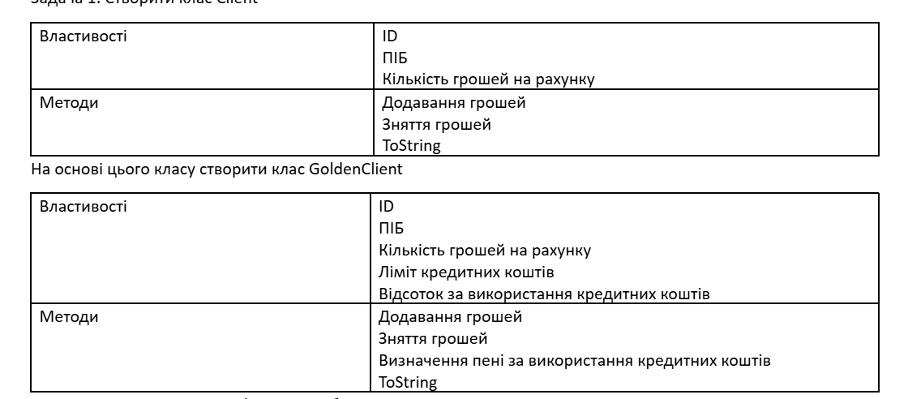
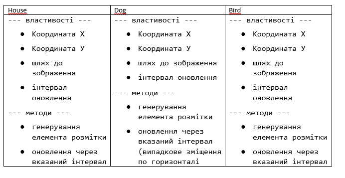
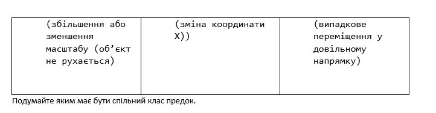

Користувач задає місяць навчання учня (перевіряти чи є числом, чи від 1 до 12, чи не канікули) та оцінку (перевіряти чи є числом, чи від 1 до 100). Вивести чи зможе він виправити оцінку (якщо оцінка погана і це не останній місяць у семестрі) . Обробку усіх помилок зробити з використанням відповідних класів.
Розробити клас Person (поля:ім'я, вік, адреса; методи: toString, визначення року народження). На основі класу Person розробити клас Worker (додати поля: посада, розмір заробітної плати, кількість відсотів оподаткування; методи:визначення кількості виплачених коштів за рік, та визначення розміру податків)
Створити клас Client

Розробити Класи

